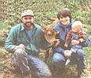
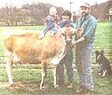

Decreasing loan availability, rising government regulation, and increasing destruction of arable land by suburban sprawl and corporate expansion are causing multiple burdens for Pennsylvania's agriculture. Becky Crambert, a Lancaster County dairy farmer, has found a way to preserve her 13 acres amidst these burdens; she put her cows up for adoption. "Adopt-A-Cow," created by Crambert in 1994, teaches rural beauty while allowing patrons to bring bovines into the family but not necessarily the home.
"I thought it was important that people have the chance to be in touch with farmers," says Crambert. "If people could follow a farm through a year and see what goes on, not the big corporate stuff that you read about in the paper, but the little farmer who's out there struggling. If I can get a few people to understand what it's all about, I've reached my goal."
Crambert and her husband, Darryl Reiter, support 73 brown-and-white Jersey cows. Forty-three milking cows have added 30 newborns to the farm in two years. "My family milked jerseys in Kentucky and I really like them. They're really calm cows," Crambert explains. Some calves compete at the annual Kimberton Fair, and several elementary schools endorse the Crambert calves as learning projects. Additionally, some of the 40 members of Adopt-A-Cow request sponsorships to give as birthday and holiday gifts.
"I've made it through the first year and the response has been good," assessed Crambert. "During the second year most people renewed without any prompting."
Adopt-A-Cow members contribute an annual $25 fee or $200 for a lifetime membership for a cow of choice. Membership includes: herd history; Certificate of the Cow Pie official adoption paper; quarterly newsletter, Udder Update, containing Pennsylvania and national farming facts, general bovine information, games, riddles, and recipes; photograph of adopter's cow suitable for framing; birth announcement; and Christmas card. Summer brings an Annual Ice Cream Social held at Crambert's home where "parents" meet their bovine relatives, tour the farm, enjoy homemade ice cream, feed calves, and cherish fond memories of a day in the country spent with the family.
For information about Adopt-A-Cow, write Becky Crambert, 6236 Beaver Dam Road, Narvon, PA 17555, or call (717) 768-3730.
|
 Becky Crambert and Darryl Reiter on their farm in Pennsylvania with their new baby and one of the many bovines available through ""Adopt-A-Cow."" |
 |
|